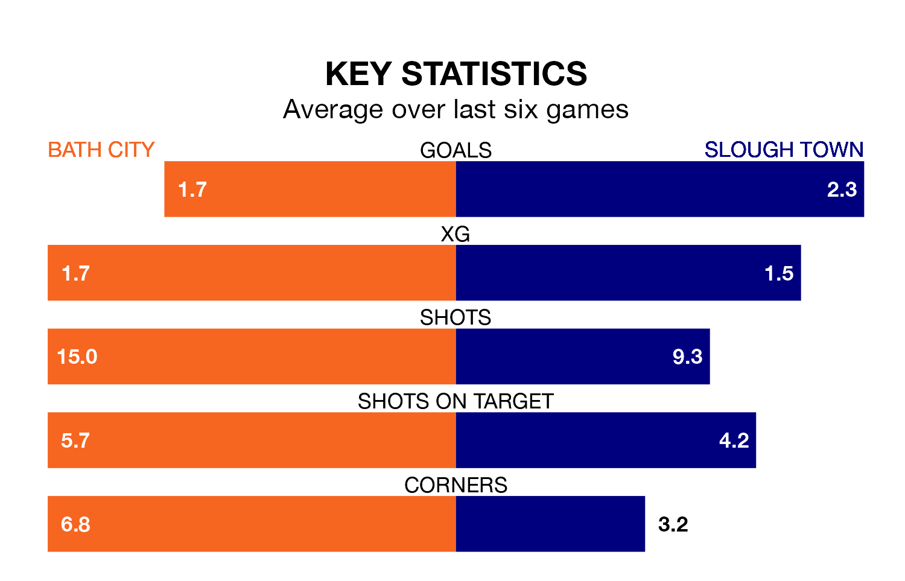

Slough Town face Bath City on Tuesday seeking to protect their long unbeaten run in National League North and South.
Slough are unbeaten in six, with four wins and two draws, ahead of the 7.45pm kick-off.
They face a Bath team who have won two and drawn two over the same number of games.
Slough are zero in the table after 24 games, of which they have won nine and drawn six, earning 33 points.
Bath are 13 places behind Town in 13th, with 11 wins and eight draws putting them on 41 points.
With 46 goals in 24 games so far this season, the away team are scoring more than average in the league with 1.9 goals per game. But they are conceding more than average too, letting in 38 goals at a rate of 1.6 per game.
City are also above average scorers, with 1.7 goals per game, compared to a league average of 1.4. They have conceded 1.2 goals per game.
In Scott Wilson, the Romans have one of the league's sharpest shooters so far this season. He has notched 13 goals in 24 appearances, to sit fourth in the scoring charts.
His goal rate of one every 152 minutes is quicker than that of John Goddard, Slough's top scorer with a goal every 184 minutes, and a total of seven goals in 16 games.
In the last three years, Bath and Slough have played each other on four occasions. Bath won two of them, Slough one, and they drew once.
On average, the Romans scored 2.2 goals and Slough 1.0 in those matches.
Their last meeting was on February 28, when Bath won 3-0 away.
Bath's last match was on December 26, a 2-1 win against Chippenham Town, with Cody Cooke and Wilson getting the goals for the Romans.
Slough drew 3-3 with Hampton and Richmond last time out, also on December 26, with Munashe Sundire, Nathan Minhas and Slavi Spasov on the scoresheet.
Updated: 15:34, 08/01/24